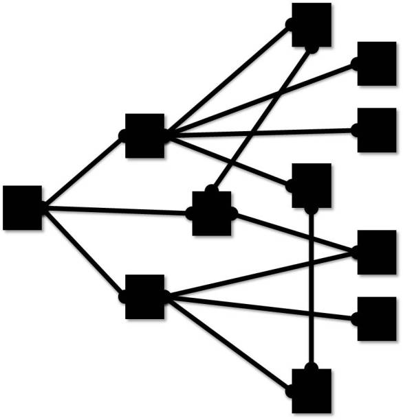

The COMoDE Project was created for the improvement of the mobile web search. With the use of ontologies, we are trying to enhance the mobile web search experience by means of the context definition, this could be used as a support for a word recommendation and query enhancement.
You're about to participate in this experiment, it will take few minutes only, please read carefully all the instructions and questions you will receive.
available until late October